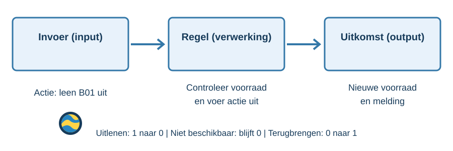
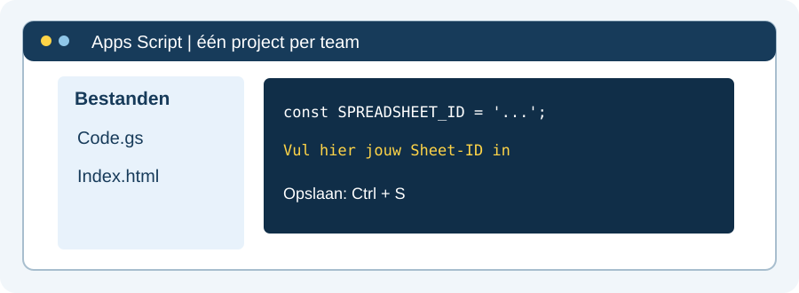
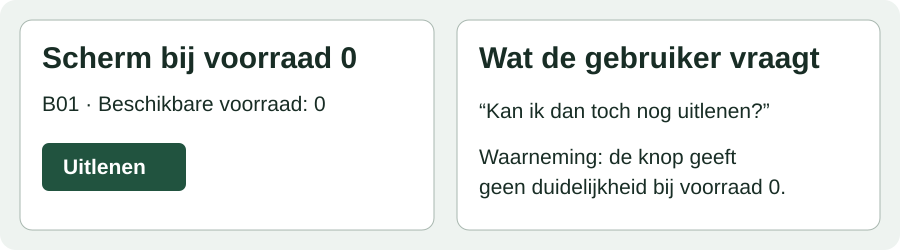
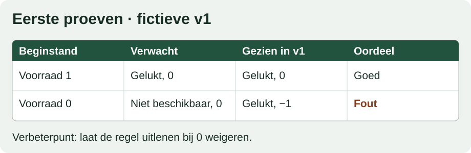
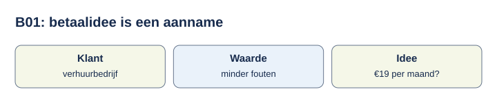

Deadline
Bewijsplek
Overdrachten bij dit issue
- Krijg je van
- Geef je door aan
Start bij A. Manager maakt D, E, I en M aan. De kroon toont de faseleider. Plaats je bijdrage en latere aanvullingen als afzonderlijke GitHub-reactie.
| Rol | Kies en ontwerp | Bouw en test | Leg het werk vast om 16.00 uur | Mondeling– |
|---|---|---|---|---|
| Manager | ||||
| Product | ||||
| Kwaliteit | ||||
| Marketing |
Begin alvast met wat je kunt voorbereiden.
Eindopdracht en werkboeken · Bekijk de B01-gesprekken
Bij Backend: open de B01-uitleg voor GET en POST.
Open de README, issues, demo en bewijslinks in een privévenster zonder in te loggen. Kijk wat een bezoeker kan lezen, downloaden of bewerken. Gebruik fictieve testdata. Haal namen, leerlingnummers, contactgegevens en toegangssleutels uit openbaar werk. Controleer afzonderlijk of de docent de afgeschermde bewijslinks kan openen.

Optioneel. Plak de hulpvraag zelf in Gemini en gebruik fictieve gegevens.
Plaats je ingevulde rolbijdrage als reactie onder hoofdissue D in jullie repository.
Los de blokkade op die het volgende stuk werk verhindert. Maak de eerstvolgende stap klein en geef die één eigenaar.
Zorg dat het ontwerp in D via de link in de team-README terug te vinden is. Voor Reflectie en samenwerking kun je later het effect van deze teamafspraak uitleggen.

Bekijk B01-reactie B · Rubric: Ontwerp
Optioneel. Plak de hulpvraag zelf in Gemini en gebruik fictieve gegevens.
Plaats je ingevulde rolbijdrage als reactie onder hoofdissue D in jullie repository.
Vergelijk oplossingen op hetzelfde klantdoel en dezelfde situaties. Licht toe waarom jullie keuze nu beter past.
Bij Ontwerp sluiten de regel en beide verwachte uitkomsten aan op de klantwens. Leg je keuze uit. Vergelijk voor Sterk twee haalbare oplossingen.

Optioneel. Plak de hulpvraag zelf in Gemini en gebruik fictieve gegevens.
Plaats je ingevulde rolbijdrage als reactie onder hoofdissue D in jullie repository.
Noteer de verwachte uitkomst vóór het testen. Zo kun je een fout herkennen zonder je verwachting achteraf te veranderen.
Het plan maakt beide tests uitvoerbaar. Voor Testen en verbeteren telt straks ook wat je daadwerkelijk doet en noteert.

Optioneel. Plak de hulpvraag zelf in Gemini en gebruik fictieve gegevens.
Plaats je ingevulde rolbijdrage als reactie onder hoofdissue D in jullie repository.
Een klantwens beschrijft het voordeel voor de gebruiker. De programmeerregel is een middel om dat voordeel te bereiken.
Bij Klantwaarde telt een herkenbaar extern klantprobleem en wat de functie daar concreet aan doet.

Optioneel. Plak de hulpvraag zelf in Gemini en gebruik fictieve gegevens.
Plaats je ingevulde rolbijdrage als reactie onder hoofdissue E in jullie repository.
Leg vooraf vast welke namen, gegevens en foutreacties onderdelen van elkaar verwachten. Product kan die afspraak daarna in de werkende versie toetsen.
Bij Werking telt de volledige taak, inclusief het resultaat. Bij Professioneel werken telt of de regel vindbaar blijft als de deelproducten samenwerken.

Optioneel. Plak de hulpvraag zelf in Gemini en gebruik fictieve gegevens.
Plaats je ingevulde rolbijdrage als reactie onder hoofdissue E in jullie repository.
Geef een bestand of functie een herkenbare taak. Splits pas als dat helpt om de regel, interface of test terug te vinden.
Bij Werking laat je de taak met normale invoer zien. Bij Professioneel werken maak je zichtbaar waar iemand de regel of gegevens kan wijzigen.

Optioneel. Plak de hulpvraag zelf in Gemini en gebruik fictieve gegevens.
Plaats je ingevulde rolbijdrage als reactie onder hoofdissue E in jullie repository.
Observeer wat een gebruiker werkelijk ziet of doet. Een teamproef geeft informatie over werking en duidelijkheid, geen bewijs van betaalbereidheid.
Bij Klantwaarde telt welk concreet probleem de functie helpt oplossen. Een verkoop of reactie levert op zichzelf geen hoger niveau op.

Optioneel. Plak de hulpvraag zelf in Gemini en gebruik fictieve gegevens.
Plaats je ingevulde rolbijdrage als reactie onder hoofdissue E in jullie repository.
Bewaar dezelfde invoer en beginstand. Noteer een foute uitkomst precies, zodat je later kunt aantonen wat veranderde.
Bij Testen en verbeteren horen twee uitgevoerde tests en een verbeterpunt. In E staat de echte uitkomst met een link naar de verwachting in D. Backend test ook zonder scherm.

Optioneel. Plak de hulpvraag zelf in Gemini en gebruik fictieve gegevens.
Plaats je ingevulde rolbijdrage als reactie onder hoofdissue I in jullie repository.
Pas één oorzaak aan en test ook de situatie die al goed ging. Zo spoor je ongewenste neveneffecten op.
De uitgevoerde verbetering telt mee bij Testen en verbeteren. Laat bij Werking ook zien wat er bij het grensgeval gebeurt.

Optioneel. Plak de hulpvraag zelf in Gemini en gebruik fictieve gegevens.
Plaats je ingevulde rolbijdrage als reactie onder hoofdissue D in jullie repository.
Een voordeel voor de klant en bereidheid om te betalen zijn verschillende vragen. Onderbouw het eerste met de taak en houd het tweede herkenbaar als aanname.
Bij Klantwaarde telt de onderbouwing van wie waarvoor zou betalen en waarom. Mailen en verkopen zijn geen voorwaarde.

Optioneel. Plak de hulpvraag zelf in Gemini en gebruik fictieve gegevens.
Plaats je ingevulde rolbijdrage als reactie onder hoofdissue I in jullie repository.
Herhaal het foutgeval én de gewone situatie. Zo zie je of de fout weg is en of bestaand werk nog werkt.
Voor Sterk bij Testen en verbeteren voer je het verbeterpunt uit, herhaal je beide tests en noteer je beide nieuwe uitkomsten.

Optioneel. Plak de hulpvraag zelf in Gemini en gebruik fictieve gegevens.
Plaats je ingevulde rolbijdrage als reactie onder hoofdissue I in jullie repository.
De README is de ingang. Eén kloppende link naar het oorspronkelijke bewijs maakt het werk beter terug te vinden dan een extra kopie.
De docent moet de geteste versie en het bestaande bewijs kunnen volgen. De vindplaats is geen extra rubriccriterium.

N Regel uitleggen · O Klantkeuze · P Samenwerking
Optioneel. Plak de hulpvraag zelf in Gemini en gebruik fictieve gegevens.
Plaats je ingevulde rolbijdrage als reactie onder hoofdissue M in jullie repository.
Een test geeft bewijs voor de situatie die je probeerde. Leg uit wat je nog zou moeten testen bij een andere situatie.
Wijs eigen testwerk aan. Verklaar een uitkomst met de regel en vertel wat je erna zou doen.

Optioneel. Plak de hulpvraag zelf in Gemini en gebruik fictieve gegevens.
Plaats je ingevulde rolbijdrage als reactie onder hoofdissue M in jullie repository.
Leg oorzaak en gevolg uit. Wijs aan wat de regel leest, beslist en bewaart.
Wijs je eigen wijziging aan en verklaar wat de regel in een nieuwe situatie beslist en waarom.

Optioneel. Plak de hulpvraag zelf in Gemini en gebruik fictieve gegevens.
Plaats je ingevulde rolbijdrage als reactie onder hoofdissue M in jullie repository.
Noem de taak, het alternatief en het effect. Geef aan welke verandering bij de klant je keuze zou kunnen veranderen.
Onderbouw je eigen klantkeuze, leg het effect uit en vertel wat je nog wilt onderzoeken.

Optioneel. Plak de hulpvraag zelf in Gemini en gebruik fictieve gegevens.
Plaats je ingevulde rolbijdrage als reactie onder hoofdissue M in jullie repository.
Benoem de eigen handeling, de inbreng van de ander en het resultaat. Koppel de volgende stap aan wat daar gebeurde.
Noem jouw bijdrage en die van een teamgenoot. Leg uit wat daardoor veranderde en welke gerichte vervolgstap je kiest.